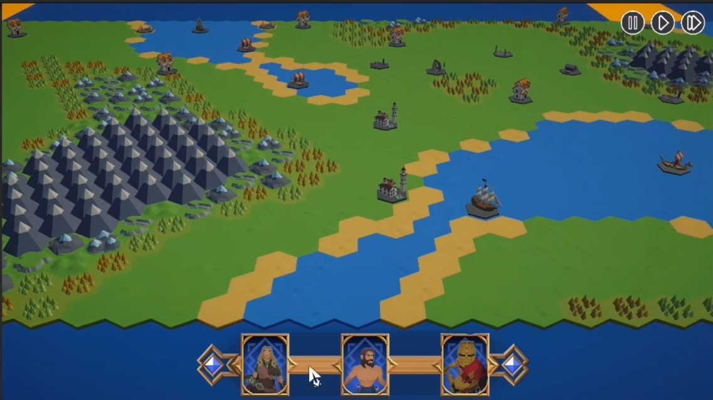
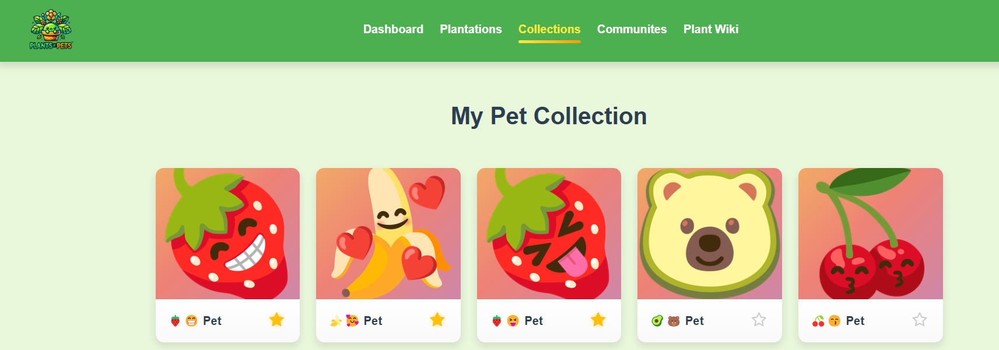
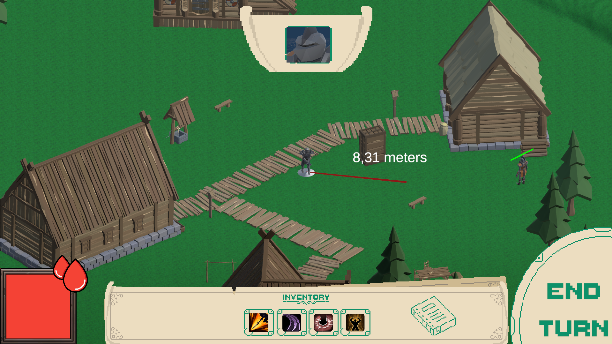
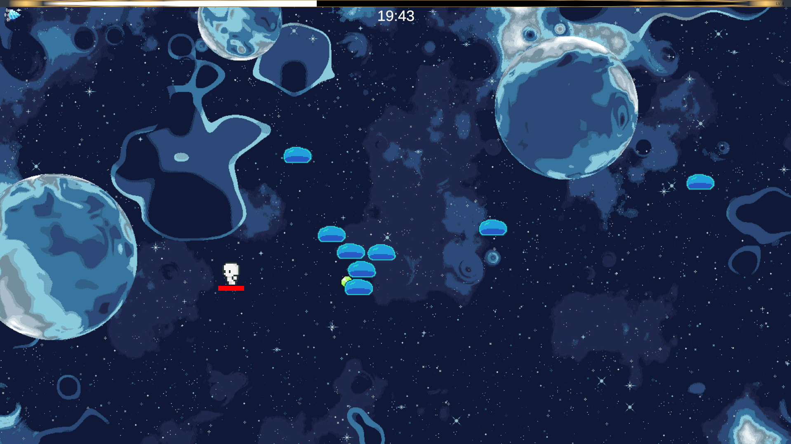

Game Programmer and Developer completing the final year of a
Bachelor's degree in Computer Science,
with 2+ years of experience developing PC and mobile games in
Unity and
Unreal Engine using
C# and
C++.
Open-minded towards diverse design and engineering approaches, and focused on continuous improvement and collaborative development with both teams and the player.
| LANGUAGES |
C#
C++
Java
TypeScript
|
| PLATFORMS |
Android
Windows
|
| ENGINES |
Unity
Unreal Engine 5
|
| TOOLS |
Git
Github
Jira
Confluence
HacknPlan
Lark
Obsidian
|
Jul 2025 -
Oct 2025
Overflow Interactive
Game Developer
During my internship at Overflow Interactive, I played a key role in the development of the strategy roguelike
"Torchpunk: Dices & Cards".
Working within a Scrumban Agile environment, I was responsible for engineering core gameplay modules using
Unity.
My key technical contributions include:
- Implementing A* Pathfinding for AI and player navigation on hexagonal tiles.
- Developing physics-based 3D dice throwing mechanics.
- Creating algorithms for procedural world generation, including biomes and structures.
- Building a modular deckbuilding reward system and a comprehensive UI feedback system.
I maintained a strong focus on code quality by adhering to
SOLID principles and
Clean Code practices, ensuring the software was scalable and easy for designers to integrate.
Sep 2022 -
Present
Instituto Politécnico de Setúbal
Bachelor of Science in Computer Science
My Computer Science degree was heavily focused on practical, project-based learning.
I collaborated extensively in teams using
Agile methodologies, particularly
Scrum, to simulate real-world development environments.
The curriculum also emphasized
Software Design concepts and advanced
problem-solving strategies,
equipping me with the skills to architect scalable solutions and tackle complex technical challenges effectively.

Torchpunk: Dices & Cards
Developed a strategy roguelike game while on my internship at Overflow Interactive.
Learned how to make clean, scalable and readable code, that not only facilitates future upgrades and implementations, but
integrates well with the designers too.
Read More

Plants R' Pets
Developed the "Plant Wiki" and Co-developed the "Plantations" functionality, for a house garden and small garden app that helps track
indicators for plants (watering, pruning, suntime).
Also includes an educational section in the form of a wiki.
Read More

Hourglass of Eternity
Led the development of a roguelike turn-based combat game for the final project of my Game Development class.
Together in a team of 4 we made a vertical slice of a roguelike turn-based game, where you move throught a map facing stronger enemies, collecting upgrades until you can beat the final boss.
Read More

Lucid Nightmare
A game that was made for a class game jam with the theme 'Chaos', together in a team of 3 we made a small vampire-survivors like where you can kill stronger enemies as time passes and gain abilities as you level up.
Read More